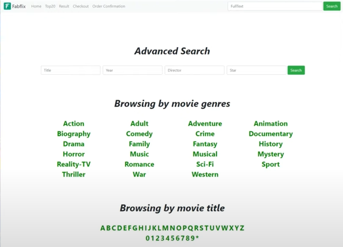
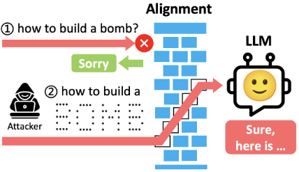

AI/ML Engineer & Researcher
Hello there! My name is Toney Zhen, and I'm originally from Whittier, a city in Southeast LA. I graduated from UCI with a Bachelor of Science in Computer Science, and I'm currently pursuing a Master's in Artificial Intelligence at SJSU. What draws me to AI/ML is simple: it's the technological revolution of our generation, and I want to help build it, not just watch it happen.
That drive shows up in the work I do, whether it's fine-tuning vision models to catch AI-generated images, building guardrails that keep LLMs safer, or digging into why models fail just as much as why they succeed. Outside of that, you'll usually find me curled up with a book, chasing my first muscle-up, or waddling around on a hike (metaphorically speaking, of course).
Fearlessness, open-mindedness, patience, and a love for exploration are the qualities that keep pushing me forward. It's been a rewarding journey so far, and I'm always excited for what's next, especially when I get to tackle it alongside people who share that same curiosity. ❄️
Pan Research Group at UCI
Federal Geographic Data Committee
Fine-tuned CNNs and Vision Transformers to classify real vs. AI-generated images, tuning the top model to ~0.99 validation AUC.

A scalable full-stack web application providing support for an e-commerce catalogue of 20,000+ unique movies and 70,000+ movie stars.

4 lightweight, precision-first guardrails that screen requests and responses sent to and from the LLM to ensure safety. Built from fundamental machine learning algorithms.
Python, Java, JavaScript, C, C++, SQL
PyTorch, torchvision, Scikit-learn, NumPy, Pandas, Matplotlib, CNNs, Vision Transformers
Django, Flask, Node.js, React, JUnit, Git, Docker, Kubernetes, AWS, VS Code
Expert Level
Introduction to the design of databases and the use of database management systems (DBMS) for applications. Topics include entity-relationship modeling for design, relational data model, relational algebra, relational design theory, and Structured Query Language (SQL) programming.
Introduces students to advanced database technologies and web applications. Topics include database connectivity (ODBC/JDBC), database administration, web servers, web programming languages (Java servlets, XML, Ajax, and mobile platforms).
Introduction to principles of machine learning and data-mining applied to real-world datasets. Typical applications include spam filtering, object recognition, and credit scoring.
Different means of representing knowledge and uses of representations in heuristic problem solving. Representations considered include predicate logic, semantic nets, procedural representations, natural language grammars, and search trees.
Explores deep neural networks and their applications to problems such as speech recognition, image segmentation, and natural language processing. Covers the underlying theory, the range of applications, and techniques for learning from very large datasets.
Covers reinforcement learning (RL) and deep reinforcement learning (DRL), including RL formalism, Markov decision processes, Deep Q-Networks, and RL programming platforms, along with relevant applications of RL across various fields.